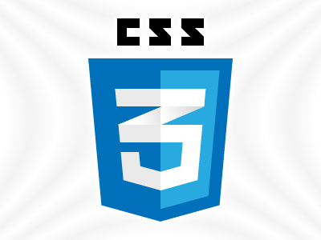

My adventurous new live as a junior web developer started in October 2019 when my training at BeCode began. So far, every day was challenging but rewarding at the same time.
The journey of a thousand miles begins with a single step.
― Lao Tzu
Git is a distributed version-control system for tracking changes in source code during software development. It is designed for coordinating work among programmers, but it can be used to track changes in any set of files. Its goals include speed, data integrity and support for distributed, non-linear workflows.
GitHub is an American company that provides hosting for software development version control using Git. Basicly, it's a social network for projects, which allows for version control. If you want to be visible as a web developer, github is the place to be.
The terminal gets useful once you get used to it. It speeds up processing data and you really feel like a hacker when your working on it.
HTML5 is a software solution stack that defines the properties and behaviors of web page content by implementing a markup based pattern to it.

Now we are learning CSS3 and I am practicing by styling this page.